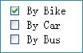

Week 8 HTML Forms
Introducing the form element
<form>
...... /** form controls go here */
</form>
A container for the controls (e.g. text field, checkbox, radio buttons etc.)
There the are some new attributes we need to used in the form
Consider the following form
<form action="http://www.google.com" method="post"> </form>- action where the form is sent to
- method specifies how the form is to be sent
- get : data is appended to the URL
- post : data is included in body of the form
Adding some form inputs
The
<input>Element, handles most form controlsJust like with our
<form>tag there are a few different attributes we need to know when it comes to<input>
Consider An example Form
<form action="http://www.google.com" method="post">
<p> <label for="name">Name:</label> <input type="text" name="name"> </p>
<p> <label for="email">Email:</label> <input type="text" name="email"> </p>
<p><input type="submit" name="Submit" value="Submit"></p>
</form>
Let's break down the above example
<input>'s change their look and feel based on thetypeattribute, on the above form we have two different types,textandsubmit<inputs>'s have anameattribute, this is important as it's tied to the inputted user value<inputs>'s can also have avalueattribute assigned to them.
<label>'s are specialists form elements used for marking form controls. Note how they have aforattribute tying them to a specific input
- Well look more into laying out forms next week but notice how the inputs and labels are wrapped in
<p>tags. This is considered good practice
Some different inputs
Let's further look at some further form inputs.
Input - Radio Box
<label for="rating"> Please enter rating </label>
<p><input type="radio" name="rating" value="excellent"> Excellent</p>
<input type="radio" name="rating" value="good"> Good </p>
<input type="radio" name="rating" value="bad"> Bad </p>
The buttons in the same group have the same name
If the user selects excellent, the server will receive:
rating=excellentRadio buttons let a user select ONE* choice
Input - Check Box

- Similar to check boxes, however they allow MULTIPLE choices
<label for="rating"> What device do you use </label>
<p><input type="checkbox" name="rating" value="ipad"> Ipad</p>
<input type="checkbox" name="rating" value="tv"> TV </p>
<input type="checkbox" name="rating" value="video"> Video </p>
Drop Down List
<label>Shipping method: </label>
<select name="shipping">
<option value="1"> Standard</option>
<option value="2"> 2-day</option>
<option value="3"> Overnight</option>
</select>
- You can create a list using the
<select>…</select>tag, giving the items in the list by using the - If the user selects "Standard", the server side will receive:
shipping=1
Text Area
<label for="suggestion"> Enter a suggestion </label>
<textarea name="suggestions" rows="5" cols="25">
my suggestions are:
</textarea>
- Used for multiple line inputs
- The attributes
rowsandcolsspecify the size
HTML5 Form Validation
HTML5 allows us to instruct the browser to validate the form before it's sent to the server
We can use the
requiredoperator in order to specify a required field<input type="text" name="Name" required>
We can use specific input types to further restrict the user choice.
Some common HTML5 input types are:
color
- date
- datetime
- datetime-local
- month
- search
- tel
- time
- week